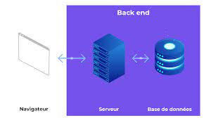
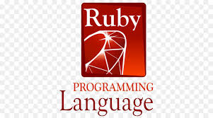

DES TECHNOLOGIES BACK END

Qu’est-ce qu’un backend d’application ?
Dans le monde de la programmation, le terme « backend » fait référence aux codes informatiques qui gèrent les opérations côté serveur telles que la logique du serveur, les fonctions de base de données, et bien d’autres encore. Lorsque vous utilisez une application, la grande majorité des données que vous envoyez et recevez sont gérées par le backend de l’application. Cependant, les fonctions du backend sont totalement invisibles pour l’utilisateur de l’application.
1. JAVASCRIPT
Depuis près d’une décennie, JavaScript s’est imposé comme le langage de programmation le plus populaire dans l’enquête annuelle de StackOverflow. Dans la récente enquête 2020 auprès des développeurs, 69,7 % des personnes interrogées ont choisi JavaScript comme le langage de programmation le plus utilisé.
JavaScript n’est plus seulement un langage de script côté client car des technologies comme Node.Js vous permettent d’effectuer des opérations côté serveur. Node.js dépend des frameworks côté serveur appelés Express.js pour créer une plate-forme qui permet aux développeurs d’écrire des codes qui s’exécutent sur le serveur.
Une fois que l’Express.Js est en place et fonctionne avec le Node.Js, les développeurs peuvent utiliser JavaScript comme langage de développement frontend et backend. Il offre également une interface de programmation d’applications (API) pour créer diverses applications, notamment des applications mobiles, hybrides, web, simples et multipages.
Fonctionnalités
Développement rapide : Étant donné que le même langage est utilisé pour le développement du frontend et du backend, les programmeurs peuvent créer des applications web et mobiles plus rapidement avec JavaScript.
Moins de frais de codage : Certaines fonctions intégrées de JavaScript, telles que DOM et hoops, augmentent l’efficacité du codage et améliorent les performances tout en réduisant la surcharge des scripts.
Technologie Lean Backend : JavaScript utilise des plates-formes backends comme Express.js qui sert d’intergiciel pour résoudre plusieurs problèmes de développement. Ils fournissent diverses fonctions comme les données POST, les en-têtes de suture, le traitement des erreurs, l’enregistreur de requêtes HTTP, et bien d’autres encore. De plus, les règles de programmation de JavaScript sont moins strictes, ce qui donne aux développeurs une plus grande liberté pour travailler avec leur logiciel intermédiaire préféré.
Réduire les coûts : L’efficacité de JavaScript réduit les efforts et les coûts de programmation nécessaires pour développer des applications. Puisque le même langage de programmation est utilisé pour créer les codes frontend et backend.
Avantage de l’open source : Avoir une communauté dynamique qui soutient la technologie de programmation est essentiel pour son amélioration continue. Heureusement, JavaScript et ses homologues backends sont des plates-formes open source avec des communautés actives de développeurs backend et frontend qui sont à l’origine d’innovations continues.
Limitations
- Les fonctions événementielles des backends JavaScript sont quelque peu compliquées, ce qui fait que les développeurs ayant une expérience d’autres plateformes interprètent mal les rappels. Ce défi a été en grande partie résolu dans les dernières versions.
-
De nombreux programmeurs qui utilisent le développement JavaScript côté serveur ne comprennent pas comment fonctionne un intergiciel.
L’hébergement des frameworks de base de JavaScript avec la base de données MySQL est compliqué.
- Certains développeurs pensent que l’approche de conception standard du développement est préférable à la liberté offerte par les frameworks backend JavaScript.
2. Python
Depuis que Python a été créé en 1991 par Guido van Rossum, il s’est développé pour devenir l’un des principaux langages de programmation polyvalents du monde actuel. Les développeurs du backend s’appuient sur ses codes soignés et très lisibles pour créer des scripts fonctionnels permettant de gérer les affectations du backend.
Une enquête menée en 2020 par Stack Overflow a révélé qu’il s’agit du principal langage de programmation que les développeurs veulent apprendre. Python a été en tête de cette catégorie pendant quatre années consécutives. Il a également classé le troisième parmi les langages de programmation les plus appréciés.
Fonctionnalités
Relativement facile à apprendre : Un des avantages de Python est le style de codage à l’anglaise qui le rend très lisible. Ainsi, coder et lire des codes Python est relativement facile pour les programmeurs débutants et expérimentés.
D’immenses bibliothèques : Python bénéficie du soutien d’énormes bibliothèques qui réduisent la nécessité d’écrire des codes manuellement. Certaines bibliothèques contiennent des codes qui améliorent des tâches comme le courrier électronique, la navigation, l’affectation de bases de données, les tests unitaires, et bien plus encore.
Rentabilité : Outre le fait que Python est une plate-forme open source librement téléchargeable, il offre également de nombreux outils et ressources gratuits qui améliorent les projets de développement d’applications.
Codes intégrables : Grâce à la règle WORA (Write Once Run Anywhere), le code python peut être intégré dans le code source d’autres langages tels que le C++.
Limitations
-
L’exécution du code Python devient lente lorsqu’elle est interrompue. Cette lacune nuit à l’ensemble du projet de développement de l’application.
- La couche d’accès à la base de données Python est moins développée que les autres langages de programmation.
- Des tests approfondis sont nécessaires pour détecter les erreurs et les bogues dans les codes Python.
- Il est fortement dépendant des frameworks et des bibliothèques de tiers
3. Ruby

Ruby a été développé en 1990 par Yukihiro Matsumoto, un expert en informatique japonais. Le langage de programmation qui partage une syntaxe similaire à celle de Python, Java et Perl s’est également imposé comme l’une des principales technologies de base actuelles. C’est une plateforme populaire pour le développement d’applications web et la plupart des développeurs la préfèrent pour le prototypage.
Certaines des principales plateformes en ligne telles que Shopify, Airbnb et Etsy utilisent Ruby pour automatiser les tâches de back-end. Ses caractéristiques orientées objet, flexibles et évolutives en font une plate-forme privilégiée.
Fonctionnalités
Hautement productif : Ruby est très productif pour effectuer des tâches de back-end en raison de sa grande lisibilité de code et de ses nombreuses bibliothèques de 3ème partie. Les développeurs peuvent accéder à tous les outils dont ils ont besoin dans Ruby ; ils n’ont guère besoin de faire référence à de la documentation externe.
Méta-programmation : Ruby supporte la métaprogrammation, qui permet à un programme d’acquérir des données provenant d’autres programmes et de se modifier en cours d’exécution. Avec d’autres outils tels que les macros, les scripts et l’introspection, accélérez la livraison des projets d’applications en Ruby.
Une bibliothèque gigantesque : Ruby peut bénéficier de plusieurs modules tiers disponibles sur RubyGems.
Test des fonctionnalités : Ruby est doté d’une énorme bibliothèque contenant plusieurs tests et fonctions automatisées qui améliorent le développement de produits de haute qualité.
Rapide et fiable : Les scripts backend peuvent être créés plus rapidement avec Ruby par rapport à d’autres technologies de codage. Les méthodes de programmation orientées objet rendent Ruby plus résistant et excellent pour effectuer des requêtes et traiter les résultats. Il peut développer des codes 40 % plus rapidement que de nombreux autres langages.